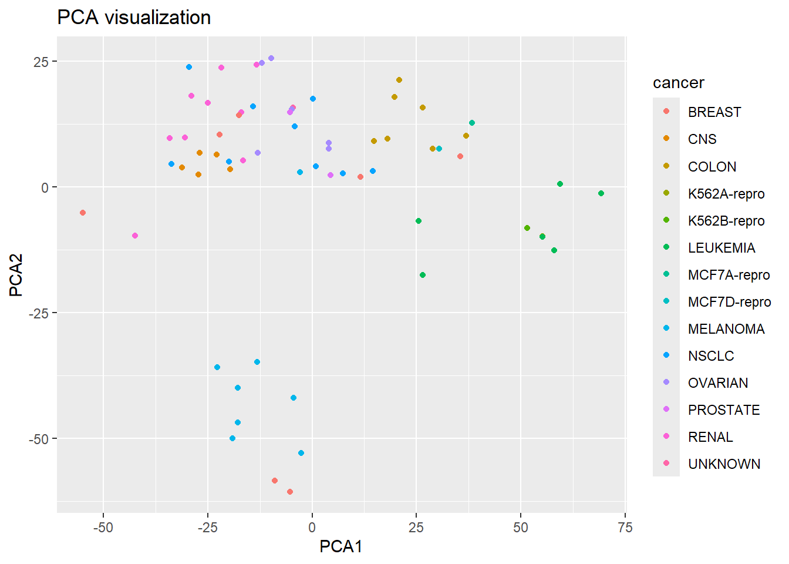
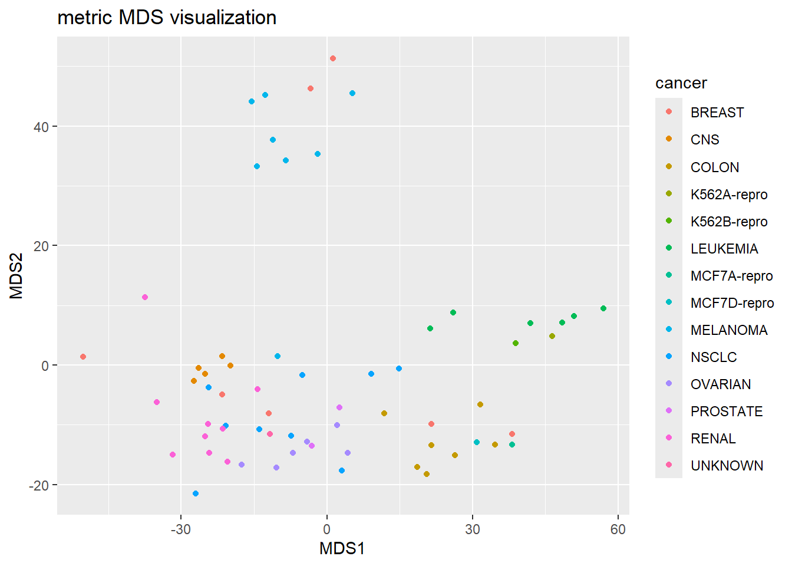
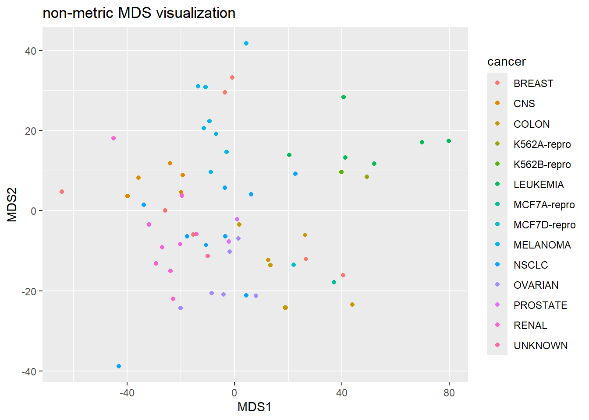

Chapter 5 MDS
Multidimensional Scaling is an alternative to PCA in terms of visualizing high dimensional data in a lower dimension. IF you will be using this data for future analysis (for example, clustering), then PCA would be recommended. However, if you are trying to visualize your data, MDS is a good alternative that can be explored! The nice thing about MDS is that it does provide some measures of how it does when it reduces the dimension.
For example, in classical MDS, you get a measure for the goodness-of-fit (want this number closer to 1…would at least like 0.8). When performing non-metric MDS, you can get the stress of reduction (want this number close to 0).
ex_MDS= NCI60$data
pca_ex=prcomp(ex_MDS,scale=T)
pve = 100 *pca_ex$sdev^2/sum(pca_ex$sdev^2)
plot(cumsum(pve),type="l")
graph.pca=data.frame(cbind(pca_ex$x[,1:2],as.character(NCI60$labs)))
colnames(graph.pca)=c("PCA1","PCA2","cancer")
graph.pca$PCA1=as.numeric(graph.pca$PCA1)
graph.pca$PCA2=as.numeric(graph.pca$PCA2)
ggplot(graph.pca,aes(x=PCA1,y=PCA2,color=cancer))+geom_point()+labs(y="PCA2",x="PCA1",title="PCA visualization")
d=dist(ex_MDS)
mds_ex=cmdscale(d,eig=TRUE, k=2)
graph.mds=data.frame(cbind(mds_ex$points,as.character(NCI60$labs)))
colnames(graph.mds)=c("MDS1","MDS2","cancer")
graph.mds$MDS1=as.numeric(graph.mds$MDS1)
graph.mds$MDS2=as.numeric(graph.mds$MDS2)
ggplot(graph.mds,aes(x=MDS1,y=MDS2,color=cancer))+geom_point()+labs(y="MDS2",x="MDS1",title="metric MDS visualization")
mds_ex=isoMDS(d, k=2)## initial value 30.903164
## iter 5 value 20.778162
## iter 5 value 20.760297
## iter 5 value 20.750556
## final value 20.750556
## convergedgraph.mds=data.frame(cbind(mds_ex$points,as.character(NCI60$labs)))
colnames(graph.mds)=c("MDS1","MDS2","cancer")
graph.mds$MDS1=as.numeric(graph.mds$MDS1)
graph.mds$MDS2=as.numeric(graph.mds$MDS2)
ggplot(graph.mds,aes(x=MDS1,y=MDS2,color=cancer))+geom_point()+labs(y="MDS2",x="MDS1",title="non-metric MDS visualization")